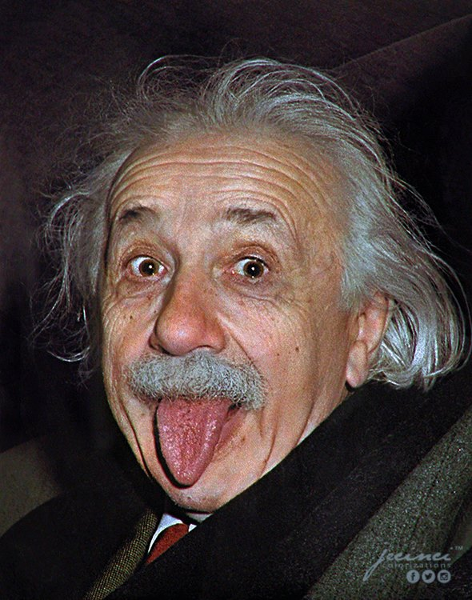
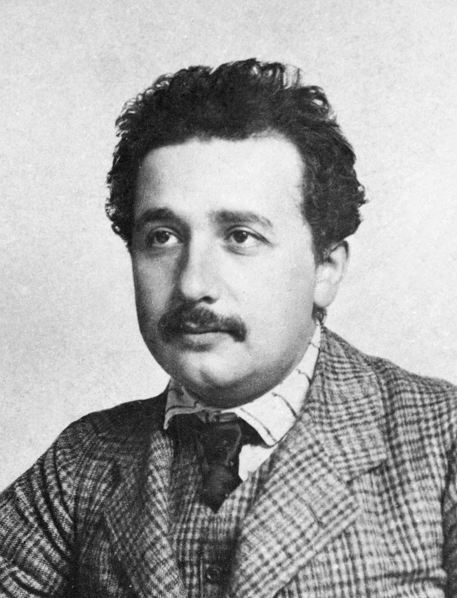
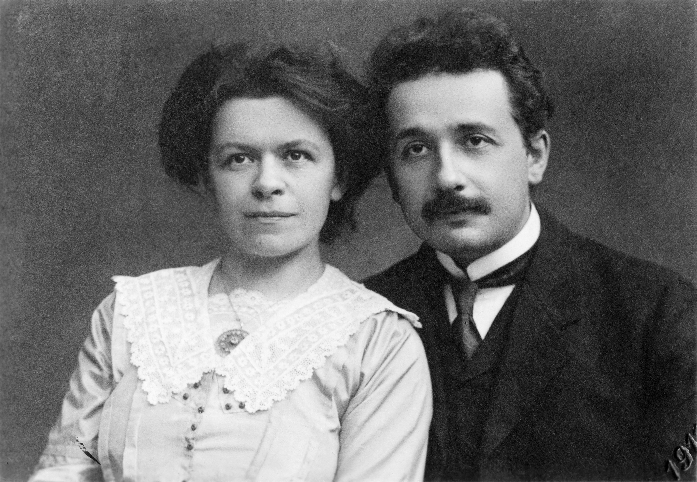
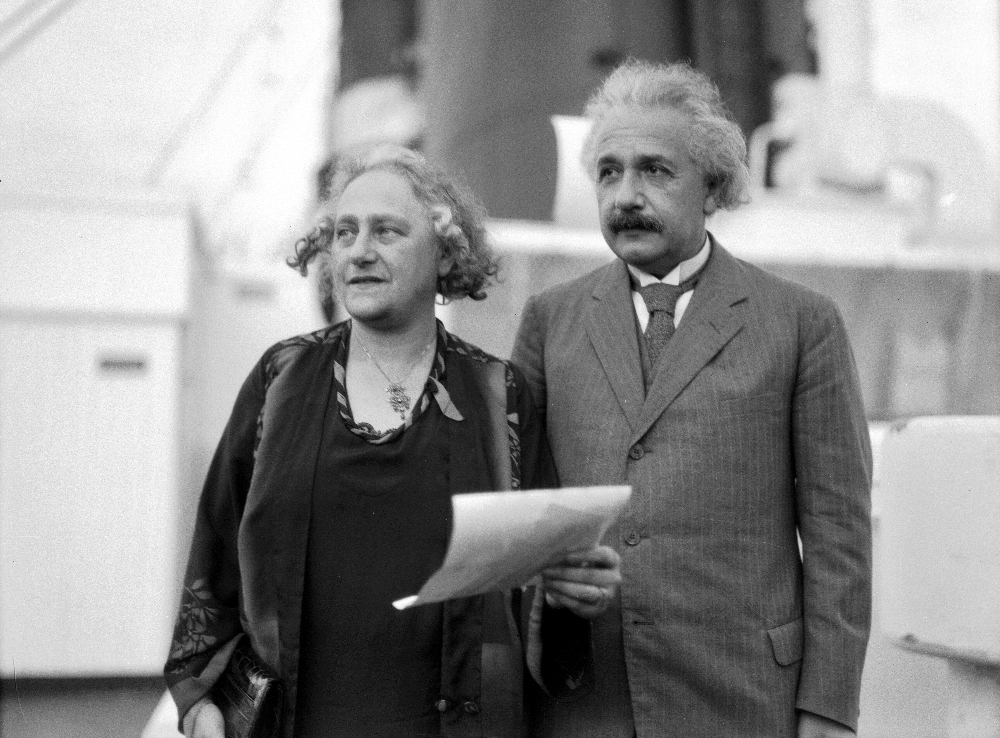

ABOUT

Albert Einstein (14 March 1879 – 18 April 1955) was a German-born theoretical physicist who is widely held to be one of the greatest and most influential scientists of all time. Best known for developing the theory of relativity, Einstein also made important contributions to quantum mechanics, and was thus a central figure in the revolutionary reshaping of the scientific understanding of nature that modern physics accomplished in the first decades of the twentieth century. His mass–energy equivalence formula "E = mc2", which arises from relativity theory, has been called "the world's most famous equation". He received the 1921 Nobel Prize in Physics "for his services to theoretical physics, and especially for his discovery of the law of the photoelectric effect", a pivotal step in the development of quantum theory. His work is also known for its influence on the philosophy of science. In a 1999 poll of 130 leading physicists worldwide by the British journal Physics World, Einstein was ranked the greatest physicist of all time. His intellectual achievements and originality have made the word Einstein broadly synonymous with genius.
Einstein received numerous awards and honors, and in 1922, he was awarded the 1921 Nobel Prize in Physics "for his services to Theoretical Physics, and especially for his discovery of the law of the photoelectric effect". None of the nominations in 1921 met the criteria set by Alfred Nobel, so the 1921 prize was carried forward and awarded to Einstein in 1922. Einsteinium, a synthetic chemical element, was named in his honor in 1955, a few months after his death
HISTORY
- 1897-1900: ETH Zurich
- In 1897, Einstein at the age of seventeen, he enrolled in the mathematics and physics teaching diploma program at the Swiss federal polytechnic school in Zürich, graduating in 1900.
- 1902–1909: Assistant at the Swiss Patent Office
- In 1903, he secured a permanent position at the Swiss Patent Office in Bern as an assistant patent examiner. ] It is conceivable that his labors at the patent office had a bearing on his development of his special theory of relativity. He arrived at his revolutionary ideas about space, time and light through thought experiments about the transmission of signals and the synchronization of clocks, matters which also figured in some of the inventions submitted to him for assessment.
- 1900–1905: First scientific papers
- Einstein's first paper, "Folgerungen aus den Capillaritätserscheinungen" ("Conclusions drawn from the phenomena of capillarity"), in which he proposed a model of intermolecular attraction that he afterwards disavowed as worthless, was published in the journal Annalen der Physik in 1900. His 24-page doctoral dissertation also addressed a topic in molecular physics. Titled "Eine neue Bestimmung der Moleküldimensionen" ("A New Determination of Molecular Dimensions") and dedicated to his friend Marcel Grossman, it was completed on 30 April 1905 and approved by Professor Alfred Kleiner of the University of Zurich three months later. (Einstein was formally awarded his PhD on 15 January 1906. Four other pieces of work that Einstein completed in 1905—his famous papers on the photoelectric effect, Brownian motion, his special theory of relativity and the equivalence of mass and energy—have led to the year's being celebrated as an annus mirabilis for physics almost as wonderful as 1666 (the year in which Isaac Newton experienced his greatest epiphanies). The publications deeply impressed Einstein's contemporaries.
- 1908–1933: Early academic career
-
Einstein's sabbatical as a civil servant approached its end in 1908, when he secured a junior teaching position at the University of Bern. In 1909, a lecture on relativistic electrodynamics that
he gave at the University of Zurich, much admired by Alfred Kleiner, led to Zürich's luring him away from Bern with a newly created associate professorship. Promotion to a full professorship
followed in April 1911, when he accepted a chair at the German Charles-Ferdinand University in Prague, a move which required him to become an Austrian citizen of the Austro-Hungarian Empire. His
time in Prague saw him producing eleven research papers.
In July 1912, he returned to his alma mater, the ETH Zurich, to take up a chair in theoretical physics. His teaching activities there centred on thermodynamics and analytical mechanics, and his research interests included the molecular theory of heat, continuum mechanics and the development of a relativistic theory of gravitation. In his work on the latter topic, he was assisted by his friend, Marcel Grossmann, whose knowledge of the kind of mathematics required was greater than his own.
In the spring of 1913, two German visitors, Max Planck and Walther Nernst, called upon Einstein in Zürich in the hope of persuading him to relocate to Berlin. They offered him membership of the Prussian Academy of Sciences, the directorship of the planned Kaiser Wilhelm Institute for Physics and a chair at the Humboldt University of Berlin that would allow him to pursue his research supported by a professorial salary but with no teaching duties to burden him. Their invitation was all the more appealing to him because Berlin happened to be the home of his latest girlfriend, Elsa Löwenthal. He duly joined the Academy on 24 July 1913, and moved into an apartment in the Berlin district of Dahlem on 1 April 1914. He was installed in his Humboldt University position shortly thereafter.
PUBLICATIONS

GALLERY






HOBBIES
- Chess
- Albert Einstein loved to play chess in his spare time and claimed the activity soothed, as well as stimulated, the mind.
- Playing the violin
- Not many people know that Einstein loved to play the violin. He picked up the instrument as a young man and carried it throughout his life.
- Reading
- Like any great scientist, Einstein was a voracious reader and loved spending long hours with his books.
- Birdwatching
- Albert Einstein was an avid birdwatcher and loved to spend time in nature.